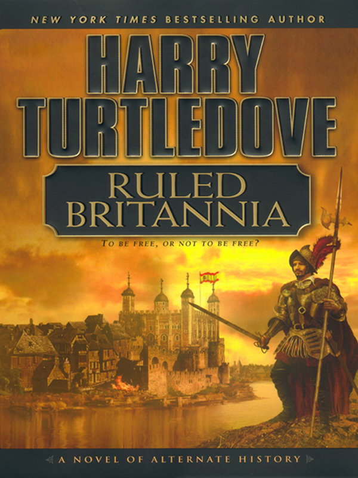

<!DOCTYPE html>
<html lang="en">
  <head>
    <meta charset="utf-8" />
    <meta name="viewport" content="width=device-width, initial-scale=1.0, maximum-scale=1.0, user-scalable=no" />

    <title></title>
    <link rel="stylesheet" href="dist/reveal.css" />
    <link rel="stylesheet" href="dist/theme/night.css" id="theme" />
    <link rel="stylesheet" href="plugin/highlight/zenburn.css" />
	<link rel="stylesheet" href="css/layout.css" />
	<link rel="stylesheet" href="plugin/customcontrols/style.css">


    <script defer src="dist/fontawesome/all.min.js"></script>

	<script type="text/javascript">
		var forgetPop = true;
		function onPopState(event) {
			if(forgetPop){
				forgetPop = false;
			} else {
				parent.postMessage(event.target.location.href, "app://obsidian.md");
			}
        }
		window.onpopstate = onPopState;
		window.onmessage = event => {
			if(event.data == "reload"){
				window.document.location.reload();
			}
			forgetPop = true;
		}

		function fitElements(){
			const itemsToFit = document.getElementsByClassName('fitText');
			for (const item in itemsToFit) {
				if (Object.hasOwnProperty.call(itemsToFit, item)) {
					var element = itemsToFit[item];
					fitElement(element,1, 1000);
					element.classList.remove('fitText');
				}
			}
		}

		function fitElement(element, start, end){

			let size = (end + start) / 2;
			element.style.fontSize = `${size}px`;

			if(Math.abs(start - end) < 1){
				while(element.scrollHeight > element.offsetHeight){
					size--;
					element.style.fontSize = `${size}px`;
				}
				return;
			}

			if(element.scrollHeight > element.offsetHeight){
				fitElement(element, start, size);
			} else {
				fitElement(element, size, end);
			}		
		}


		document.onreadystatechange = () => {
			fitElements();
			if (document.readyState === 'complete') {
				if (window.location.href.indexOf("?export") != -1){
					parent.postMessage(event.target.location.href, "app://obsidian.md");
				}
				if (window.location.href.indexOf("print-pdf") != -1){
					let stateCheck = setInterval(() => {
						clearInterval(stateCheck);
						window.print();
					}, 250);
				}
			}
	};


        </script>
  </head>
  <body>
    <div class="reveal">
      <div class="slides"><section  data-markdown><script type="text/template">

<!-- .slide: data-background-opacity="0.5" data-background-image="https://hist3812.netlify.app/images/illustrations/old-school-game-controller-vector.svg" -->

<div align="right">

### Fiction, Non-Fiction, <Br>Creative Non-Fiction, <br>Lies, and Counterfactuals

### Playful Engagement With The Past
#### HIST 3812
Sept 12 w/ Dr. Graham

</div>

</script></section><section  data-markdown><script type="text/template">
<!-- .slide: data-background-opacity="0.5" data-background-image="bluebricks.png" -->

<small>
<split even gap="3">


> I believe that the study of history ought to be fun and that too often historians (I  
include myself in this category) take an overly stuffy approach to the past. 

>Maybe  it’s our conditioning in graduate school, or maybe we’re afraid that if we get too  
 playful with our field we won’t be taken seriously as scholars. 

>Whatever the reason, I think history has just gotten a bit too boring for its own good. This  
 course is my attempt to lighten up a little and see where it gets us. - Mills Kelly
 </split>
 </small>
 
</script></section><section  data-markdown><script type="text/template">
<!-- .slide: data-background-opacity="0.5" data-background-image="last american pirate.webp" -->

<div align="right">

### The Last American Pirate

The class project of [Jane Browning](http://lastamericanpirate.net/page/3/index.html)
</div>

<aside class="notes"><p>tell the tale of the pirate
hoax on wikipedia page: <a href="https://web.archive.org/web/20081208123323/http://en.wikipedia.org/wiki/Edward_Owens">https://web.archive.org/web/20081208123323/http://en.wikipedia.org/wiki/Edward_Owens</a> 
&quot;the choice of a student blog had important implications for who ended up falling victim to the hoax.&quot;
<a href="https://dancohen.org/2018/03/22/revisiting-mills-kellys-lying-about-the-past-10-years-later/">https://dancohen.org/2018/03/22/revisiting-mills-kellys-lying-about-the-past-10-years-later/</a></p>
</aside></script></section><section  data-markdown><script type="text/template">
<p style="line-height: 0" class="reset-paragraph image-paragraph"></img></p>


Q: What happens when you teach students how to lie?  
A: They learn how to be historians. _Mills Kelly_

<aside class="notes"><p>&#39;Given that historians care a great deal about historical methods and that history majors are presumably interested in the methods of their chosen discipline, how is it that the methods course could have become an apparent nexus for so much dissatisfaction from both faculty and students? After thinking about this problem for quite a while, I decided that there are two very likely answers to the problems I and others find with this course. The first possible answer is that when it comes to teaching historical methods historians have lost their sense of fun, their sense of playfulness when it comes to our discipline (assuming we ever had such a sense of fun in the first place). The second possible answer is that in the increasingly intermediated world our students now live in, the traditional approaches to historical methods—in fact the traditional approaches to history itself—are increasingly disconnected from the lives our students live&#39;</p>
</aside></script></section><section  data-markdown><script type="text/template">
Am I going to teach you how to lie?

- &shy;<!-- .element: class="fragment" data-fragment-index="1" -->No. _But..._
</script></section><section  data-markdown><script type="text/template">
How are hoaxes like poems?


<aside class="notes"><p>Kavanaugh, 197 Our objectivity is more limited than we tend to pretend, however hard we try. The more closely we position ourselves to empiricism, the more closely we move to the simple reporting of lists (measurements, artefacts, dates, lists of lists) and the further we get from communicating their significance. This is where poetry may help. Like prose, it can communicate propositional knowledge (‘knowing that’, as opposed to non-propositional knowledge, ‘knowing how’). That is, poetry can offer us truths or facts about the world. What it can also do, is to offer phenomenal knowledge (Broad 1925; Feigl 1958; Nagel 1974), an insight into the possible experience attending those lists, which includes the phenomenological and emotional content that archaeological physicalism denies. With the addition of fictive utterances, such as an imaginary narrator, it is able to suggest, or  even  reveal,  conceptual  edges  to  our  thinking.  This  then  facilitates  an  extension to our epistemic comprehension.</p>
</aside></script></section><section  data-markdown><script type="text/template">
What is a historical fact? 

What is fiction? 

What does poetry do?

<aside class="notes"><p>Kavanaugh- I take the distinction between fact and fiction to be that the former is referential (to reality) and the latter is not. That is, fiction is something invented and, as such, it is therefore today often imbued “with a degree of covert negativity and  frivolity”  (ibid.:  3)  because  invented  or  conceptual  things  are  weighted  with a lighter degree of truth value than that of a tangible or material thing.Poetry bridges these divides. It can be a fiction in that it is always con-ceptual, whilst also being referential. Likewise, it can be total make-believe.</p>
<p>Kavanaugh 185</p>
</aside></script></section><section  data-markdown><script type="text/template">
<p style="line-height: 0" class="reset-paragraph image-paragraph"></img></p>

How poetry is like agent based simulation

(background image - [free book!](https://www.sfipress.org/books/agent-based-modeling-archaeology))

<aside class="notes"><p>landscapes of possibility, exploring what could have been given particular constraints</p>
</aside></script></section><section  data-markdown><script type="text/template">
<split left="2" right="1" gap="2">


ABM isn't a Harry Turtledove counterfactual novel. <br><br>It's more like speculative fiction, but from a historical starting point.

<p style="line-height: 0" class="reset-paragraph image-paragraph"></img></p>


</split>

<aside class="notes"><p>counterfactuals do not control for all other variables, they don&#39;t sweep the parameter space</p>
<p>Kavanaugh -  people sometimes “forget that art relies on the mastery of craft”. Craft, in turn, relies upon the application of method. Method:  a particular  procedure  for  accomplishing  or  approaching  something, especially a systematic or established one.</p>
</aside></script></section><section  data-markdown><script type="text/template">

<split even>

<p style="line-height: 0" class="reset-paragraph image-paragraph"></img></p>


<p style="line-height: 0" class="reset-paragraph image-paragraph"></img></p>


<p style="line-height: 0" class="reset-paragraph image-paragraph"></img></p>


What are **our** methods?
</split>

<aside class="notes"><p>kelly - &quot;the kind of research skills that a methods course is intended to teach them, including identifying a topic, creating a thesis they can support with research, then finding an appropriate set of primary and secondary sources to support their argument&quot; </p>
<ul>
<li>thesis, then facts to support is bassackwards - surely we begin with &#39;why&#39;, find the &#39;facts&#39; around &#39;how&#39; and then write &#39;because&#39; last; the &#39;because&#39; is our thesis statement...</li>
</ul>
</aside></script></section><section  data-markdown><script type="text/template">
Take Wikipedia for instance. How does it create knowledge?

<aside class="notes"><p>it also requires trust. which explains why so many people were pissed off by the whole American Pirate thing. How do we create trust in our readers?</p>
<blockquote>
<p>“Wikipedia is not something that just exists ... It takes work and it requires labor.” - 
<a href="https://www.nytimes.com/2018/03/19/business/media/youtube-wikipedia.html">https://www.nytimes.com/2018/03/19/business/media/youtube-wikipedia.html</a>
the other thing that pissed people off is that it was historians who were largely taken in by the hoax</p>
</blockquote>
</aside></script></section><section  data-markdown><script type="text/template">
Where do our methods admit the possibility of poetry?

<aside class="notes"><p>this might be where the trust comes into things</p>
</aside></script></section><section  data-markdown><script type="text/template">
Creative non fiction vs Saidiya Hartman's 'Critical Fabulation'


Does this have to be written? Could it take other formats? 

<aside class="notes"><p>owl at purdue is good - <a href="https://owl.purdue.edu/owl/subject_specific_writing/creative_writing/creative_nonfiction/index.html">https://owl.purdue.edu/owl/subject_specific_writing/creative_writing/creative_nonfiction/index.html</a> </p>
<ul>
<li>focus on story</li>
<li>voice, candour to draw reader in</li>
<li>uses devices of fiction</li>
<li>but ultimately tells a &#39;true&#39; story</li>
</ul>
<p><a href="https://en.wikipedia.org/wiki/Saidiya_Hartman">https://en.wikipedia.org/wiki/Saidiya_Hartman</a> critical fabulation
hartman - stories to fill the gaps, but stories that emphasize how the gaps can&#39;t be filled
-makes me think of unpleasant enchantment, and the uncanny ruptures of the past into the present</p>
</aside></script></section><section  data-markdown><script type="text/template">
Critical Fabulation /2

<small>
<split even gap="3">
"So is it possible to reiterate her name and to tell a story about degraded matter and dishonored life that doesn’t delight and titillate, but instead ventures toward another mode of writing? 

"If it is no longer suffcient to expose the scandal, then how might it be possible to generate   a different set of descriptions from this archive? To imagine what could have been? To  envision a free state from this order of statements? ""

"The dangers entailed in this endeavor  cannot be bracketed or avoided because of the inevitability of the reproduction of such  scenes of violence, which define the state of blackness and the life of the ex-slave. To  the contrary, these dangers are situated at the heart of my work, both in the stories I have chosen to tell and in those that I have avoided."

Saidiya V Hartman - Venus in Two Acts, 2008
[original version](https://watermark-silverchair-com.proxy.library.carleton.ca/2-sa26%20hartman%20(1-14).pdf)|[zine version](https://www.moma.org/momaorg/shared/pdfs/docs/learn/venus-in-two-acts-cassandra.pdf?_ga=2.185249322.280157182.1660248359-107634124.1660248359)
</split>

<aside class="notes"><p>in an interview, Hartman notes that the piece emerged as she was struggling with &#39;the violence of the archive and the way power is registered through absences and silences, the obliteration of lives, all the things that we could not know&#39; <a href="https://www.moma.org/audio/playlist/298/4088">https://www.moma.org/audio/playlist/298/4088</a> . Describes the way women and girl slaves described in ledgers and records - whore, harlot, venus - and wrestles with how to tell the story</p>
</aside></script></section><section  data-markdown><script type="text/template"><small>
<split even gap="3">
The archive is inseparable from the play of power that murdered Venus and her shipmate and exonerated the captain. And this knowledge brings us no closer to an understanding of the lives of two captive girls or the violence that destroyed them and named the ruin: Venus. Nor can it explain why at this late date we still want to write stories about them...

...By advancing a  series of speculative arguments and exploiting the capacities of the subjunctive (a grammatical mood that expresses doubts, wishes, and possibilities), in fashioning a narrative, which is based upon archival research, and by that I mean a critical reading of the archive that mimes the figurative dimensions of history, I intended both to tell an impossible story and to amplify the impossibility of its telling.

</split>
</script></section><section  data-markdown><script type="text/template">
Fabula & the subjunctive tense
- playing, rearranging the elements of the story & sequence to create divergent, contested views
- makes visible the construction of the past
- 'narrative restraint', refusal to fill gaps or provide closure an imperative of the method
- point is not to 'give voice' but imagine what cannot be said
- "It is a history of an unrecoverable past; it is a narrative of what might have been or could have been; it is a history written with and against the archive."

<aside class="notes"><p>Hartman: The method guiding this writing practice is best described as critical fabulation. “Fabula” denotes the basic elements of story, the building blocks of the narrative. A fabula, according to Mieke Bal, is “a series of logically and chronologically related events that are caused and experienced by actors. An event is a transition from one state to another. Actors are agents that perform actions. (They are not necessarily human.) To act is to cause or experience and event.” 35</p>
</aside></script></section><section  data-markdown><script type="text/template">
<!-- .slide: data-background-opacity="0.5" data-background-image="last american pirate.webp" -->

What worked about the Last American Pirate
- &shy;<!-- .element: class="fragment" data-fragment-index="1" -->multimodal
- &shy;<!-- .element: class="fragment" data-fragment-index="2" -->braided narratives that emerge through and via various media
- &shy;<!-- .element: class="fragment" data-fragment-index="3" -->trusting ecosystem: it looked like history, it felt like history
</script></section><section  data-markdown><script type="text/template">
<split even>
<p style="line-height: 0" class="reset-paragraph image-paragraph"></img></p>

<p style="line-height: 0" class="reset-paragraph image-paragraph"></img></p>

</split>

What constitutes truth in a video game?
- why 'authenticity' is bullshit
- procedural rhetoric

<aside class="notes"><p>miguel sicart, on ethics in games. an ethical game is a truthful game. a game is ethical if the choices you make are meaningful</p>
</aside></script></section><section  data-markdown><script type="text/template">
Lessons for playful engagement - What have we learned?

Does 'playful' = unserious?

Where does a 'playful' mindset leave us?

<aside class="notes"><p>and is this historical thinking? kelly quotes levesque &quot;Historical thinking is, indeed, far more sophisticated and demanding than  mastering substantive (content) knowledge, in that it requires the acquisition of  such knowledge to understand the procedures employed to investigate its aspects  and conflicting meanings... <strong>To think historically is thus to understand how  knowledge has been constructed and what it means.</strong> Without such sophisticated   insight into ideas, peoples, and actions, it becomes impossible to adjudicate between competing versions (and visions) of the past.&quot;</p>
<ul>
<li>playfulness focusses on procedural knowledge</li>
<li>triangulate from multiple sources of knowledge/facts to create truth</li>
</ul>
</aside></script></section><section  data-markdown><script type="text/template">
## Next Class

What do you need to know before you can come back to class confident you will do well?

</script></section></div>
    </div>

    <script src="dist/reveal.js"></script>

    <script src="plugin/markdown/markdown.js"></script>
    <script src="plugin/highlight/highlight.js"></script>
    <script src="plugin/zoom/zoom.js"></script>
    <script src="plugin/notes/notes.js"></script>
    <script src="plugin/math/math.js"></script>
	<script src="plugin/mermaid/mermaid.js"></script>
	<script src="plugin/chart/chart.min.js"></script>
	<script src="plugin/chart/plugin.js"></script>
	<script src="plugin/menu/menu.js"></script>
	<script src="plugin/customcontrols/plugin.js"></script>

    <script>
      function extend() {
        var target = {};
        for (var i = 0; i < arguments.length; i++) {
          var source = arguments[i];
          for (var key in source) {
            if (source.hasOwnProperty(key)) {
              target[key] = source[key];
            }
          }
        }
        return target;
      }

	  function isLight(color) {
		let hex = color.replace('#', '');

		// convert #fff => #ffffff
		if(hex.length == 3){
			hex = `${hex[0]}${hex[0]}${hex[1]}${hex[1]}${hex[2]}${hex[2]}`;
		}

		const c_r = parseInt(hex.substr(0, 2), 16);
		const c_g = parseInt(hex.substr(2, 2), 16);
		const c_b = parseInt(hex.substr(4, 2), 16);
		const brightness = ((c_r * 299) + (c_g * 587) + (c_b * 114)) / 1000;
		return brightness > 155;
	}

	var bgColor = getComputedStyle(document.documentElement).getPropertyValue('--r-background-color').trim();

	if(isLight(bgColor)){
		document.body.classList.add('has-light-background');
	} else {
		document.body.classList.add('has-dark-background');
	}

      // default options to init reveal.js
      var defaultOptions = {
        controls: true,
        progress: true,
        history: true,
        center: true,
        transition: 'default', // none/fade/slide/convex/concave/zoom
        plugins: [
          RevealMarkdown,
          RevealHighlight,
          RevealZoom,
          RevealNotes,
          RevealMath.MathJax3,
		  RevealMermaid,
		  RevealChart,
		  RevealCustomControls,
		  RevealMenu,
        ],

		mathjax3: {
			mathjax: 'plugin/math/mathjax/tex-mml-chtml.js',
		},

		customcontrols: {
			controls: [
				{id: 'toggle-overview',
				title: 'Toggle overview (O)',
				icon: '<i class="fa fa-th"></i>',
				action: 'Reveal.toggleOverview();'
				},
			]
		},
		menu: {
			loadIcons: false
		}
      };

      // options from URL query string
      var queryOptions = Reveal().getQueryHash() || {};

      var options = extend(defaultOptions, {"width":960,"height":700,"margin":0.04,"controls":true,"progress":true,"slideNumber":true,"transition":"slide","transitionSpeed":"default"}, queryOptions);
    </script>

    <script>
      Reveal.initialize(options);
    </script>
  </body>
</html>
